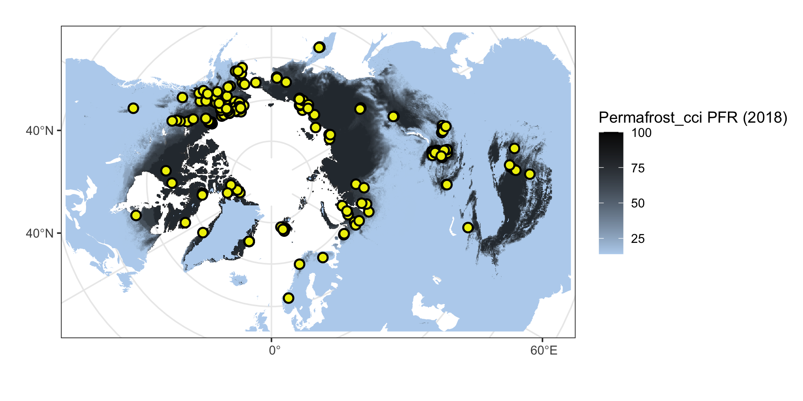
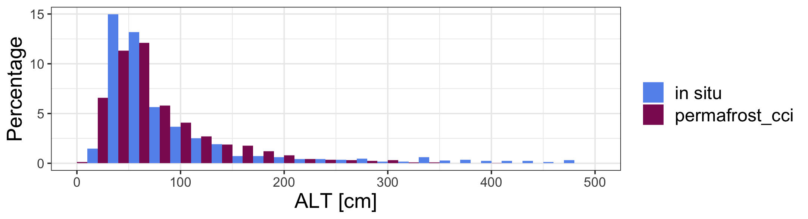

library(readxl)
library(ncdf4)
library(raster)
library(tidyverse)
library(ggforce)
library(grid)
library(sf)
sf::sf_use_s2(FALSE)The in situ dataset:
inSitu_alt <- read.csv("data/ALT_inSitu_v3_2020.csv", sep = ";", dec = ",") %>%
select(-ALT_Permafrost_cci, -starts_with("X")) %>% mutate(ALT_Permafrost_cci = NA) %>% rename(Year = year) %>%
filter(!is.na(Latitude), !is.na(Longitude)) ## base map
mp <- st_read("~/Google Drive/GeoDat/NaturalEarth/50m_physical/ne_50m_land/ne_50m_land.shp", quiet = TRUE) %>%
st_set_crs(4326) %>% st_buffer(0) %>% st_union() %>%
st_sym_difference(st_read("~/Google Drive/GeoDat/NaturalEarth/110m_physical/ne_110m_lakes/ne_110m_lakes.shp", quiet = TRUE) %>%
st_set_crs(4326) %>% st_union()) %>%
st_transform("+proj=stere +lat_0=90 +lat_ts=71 +lon_0=0 +x_0=0 +y_0=0 +datum=WGS84 +units=m +no_defs") %>%
st_crop(st_bbox(c(xmin = -5.5e6, ymin = -4e6, xmax = 8e6, ymax = 4e6)))
map <- ggplot() +
geom_sf(data = mp, colour = NA, fill = "slategray2") +
theme_bw() +
xlim(-5e6, 7.5e6) + ylim(-3.8e6, 3.8e6)
# rast <- raster("~/Documents/ESAproject/SimulationData/PermafrostExtent/ESACCI-PERMAFROST-L4-PFR-MODISLST_CRYOGRID-AREA4_PP-2018-fv03.0.nc")
# rast_spdf <- as(aggregate(rast, 15), "SpatialPixelsDataFrame")
# rast_df <- as.data.frame(rast_spdf)
# colnames(rast_df) <- c("value", "x", "y")
# save(rast_df, file = "Rmarkdown/temp/rast_df.rda")
load("data/temp/rast_df.rda")
mapDat <- inSitu_alt %>% filter(!duplicated(Name))
crds_pts <- st_as_sf(mapDat, coords = c("Longitude", "Latitude")) %>% st_set_crs(4326) %>%
st_transform("+proj=stere +lat_0=90 +lat_ts=71 +lon_0=0 +x_0=0 +y_0=0 +datum=WGS84 +units=m +no_defs") %>% st_coordinates()
png("figures/Figure_4.1.png", width = 20, height = 10, units = "cm", res = 250)
map +
geom_raster(data=rast_df, aes(x=x, y=y, fill=value), alpha=0.8, size=0) +
scale_fill_gradient(low="slategray2", high="black") +
labs(fill = "Permafrost_cci PFR (2018)") +
ggnewscale::new_scale_fill() +
geom_point(data = data.frame(crds_pts),
aes(x = X, y = Y),
color = "black", fill = "yellow2", size = 2.5, alpha = 1, stroke = 1, shape = 21) +
labs(x = "", y = "")
dev.off() Figure 4.1. Northern hemisphere Permafrost_cci PFR permafrost probability and in situ active layer thickness measurements.
path <- "/Users/slisovski/Documents/ESAproject/SimulationData/ActiveLayerThickness/"
altFls <- data.frame(fl = list.files(path))
altFls$year <- as.numeric(sapply(strsplit(altFls$fl, "-"), function(x) x[7]))
for(y in unique(inSitu_alt$Year)) {
cat(sprintf('\r%d', y))
indTab <- which(inSitu_alt$Year==y)
subTab <- st_as_sf(inSitu_alt[indTab,], coords = c("Longitude", "Latitude"), crs = 4326)
st <- raster(glue::glue("{path}{altFls$fl[altFls$year==y]}"))
extrM <- raster::extract(st, subTab %>% st_transform(proj4string(st)) %>%
st_coordinates())
inSitu_alt$ALT_Permafrost_cci[indTab] <- extrM
}
save(inSitu_alt, file = "data/inSitu_alt.rda")Match-up Version 1 synthesised binary Permafrost Extent PFR (CRDPv0 2019)
Match-up data set in phase 1, Version 1: - Permafrost_cci CryoGrid-3 Permafrost fraction PFR per site and year given in 0, 20, 40, 60, 80 or 100% - A binary PFR data set from 2003 to 2017 was compiled from Version 1 synthesised mean annual GTD - discrete depths. - Criteria permafrost abundance yes / no - One data set with Yes all measurements in depths (0 – 2m) MAGT ≤0.5 °C
Match-up Version 2 synthesised binary Permafrost Extent PFR (CRDPv1 2020)
Match-up data set in phase 2, Version 2: - Permafrost_cci CryoGrid 3 Permafrost fraction PFR per site and year is given in 0, 14, 29, 43, 57, 71 or 100% - A binary PFR data set from 1997 to 2018 is compiled from Version 2 synthesised mean annual GTD - discrete depths and Version 2 synthesised annual CALM ALT and active layer depth measurements from Russian expeditions (Bartsch, oral communication, 2020) - Criteria permafrost abundance yes / no - One data set with Yes if any measurements in depths (0 – 2.4 m) MAGT ≤0.5 °C and Yes to all ALT and ALD measurements <300 cm - Accuracy = (TP+TN)/(TP+TN+FP+FN), where: TP = True positive; FP = False positive; TN = True negative; FN = False negative - The formula for quantifying binary precision is: Precision = (TP) / (TP+FP)
Match-up Version 2 synthesised binary Permafrost Extent PFR (CRDPv2 2021)
Match-up data set in phase 3, Version 3:
…
subDat <- inSitu_alt %>% mutate(ALT_Permafrost_cci = ALT_Permafrost_cci*100) %>%
pivot_longer(col = c("Depth", "ALT_Permafrost_cci")) %>%
mutate(name = if_else(name=="Depth", "in situ", "permafrost_cci"))
png("figures/Figure_4.2.png", width = 22, height = 6, units = "cm", res = 250)
ggplot(subDat, aes(x = value, fill= name)) +
geom_histogram(binwidth=20, position="dodge", aes(y=(..count../sum(..count..))*100)) +
scale_fill_manual(values = c("cornflowerblue", "maroon4")) +
theme_bw() +
xlim(0, 500) +
labs(fill='', x = "ALT [cm]", y = "Percentage") +
theme(text = element_text(size=rel(4)),
legend.text = element_text(size=14))
dev.off() ## quartz_off_screen
## 2 Figure 4.2: Frequency distribution of Permafrost_cci ALT and in situ ALT from GTN-P CALM.